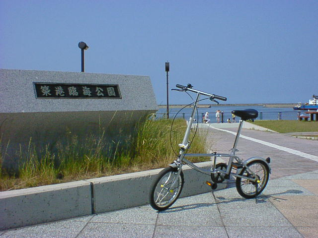

７月０２日
今日は６時に目がさめ、というかたいがいこの時間に起きていたが、７時半頃ホテル内で朝食をとり９時前にホテルを出て大通公園近くの
第一勧業銀行に向かった。やはり遠い地で所持金が千円くらいになると心細くなる。お金をおろしたらすぐに小樽に行くため札幌駅へ。JR
函館本線で３０分ちょっとで到着し自転車を組み立て徘徊する準備を整え運河に向かった。去年は来なかったが以前来たときとあまり変
わっている様子はなかった。とりあえず海沿いをぼーっと走ったあと北一硝子に行きお見上げあさりを開始する。
北一硝子はいくつか建物がありとりあえず片っ端から見ていき何買おうかと考えた結果、夏ということで風鈴に決定。じゃあどれにしようか
と見てまわっていたらいっぱい種類があってどれも音がちがくてかなり迷ったが結局北一硝子オリジナルすずらん風鈴に決定した。
お昼をまわったのでそろそろ昼ご飯にしようかと探していたら寿司屋横丁というのを見つけそこにした。回転寿司だったがおいしく値段が
かさみそうだったのでお茶をがぶ飲みして量を押さえておいた。食後は小樽築港に向けてふらふらと自転車で走り出した。
今日の小樽は晴天でかなり暑く自転車をこぐのも楽ではなかったが日焼けするチャンスと思い半袖を更にまくり目的地に向かった。JR小
樽築港駅は小樽から電車でふた駅だがそれほど遠くなく３０分くらいでついたと思う。途中陸橋がありヘロヘロにはなったが。陸橋の頂上か
ら小樽築港駅が見えた。あとその周辺にかなりでかい建物も。その建物にはSATY、ヒルトンホテル、VIVREが入っていて・・・とにかくでか
かった。一階だけでもくまなく見て回ろうかと思ったが途中で挫折した。
午後４時を過ぎちょっと疲れたので海沿いにあった築港臨海公園でボーっと海を眺めたり家族が戯れている様子を見たりして５時過ぎに
電車で札幌に戻った。来年も時間があったら是非小樽に来たいなと思った。
札幌に着いたあとらとりあえず大通公園に行きとうきびを食べた。やはり一度は食べないと。その後公園周辺をぶらぶら走り回って（狸小
路などをあてもなく）晩御飯（エビカレー）を食べふらふらとホテルへと帰っていった。あとは風呂に入って洗濯しておやすみなさい。明日は
天気予報によると雨らしい。去年と同じ展開になってきた。

小樽築港駅のすぐそば。ここでひとやすみ。
戻る